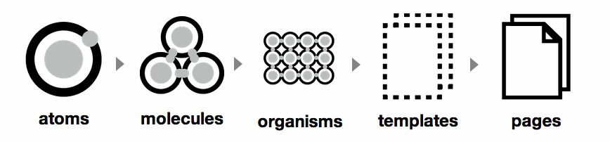

What is Atomic Web Design and how can Pattern-Lab help us with hbr.org redesign?
By Daigo Fujiwara, Feb 14, 2014 (rev 2)
In this 30 min. meeting, I will introduce you to the concept of Atomic Web Design and a tool that is installed for us to use internally, Pattern-Lab.
I want us to start the conversation among us, and be familiar with this "building-blocks" approach.
Atomic Web Design
A methodology used to construct web design systems.
Created by Brad Frost.
Atomic Web Design2/3
Who is Brad Frost?
Brad Frost created a website called This is Responsive which is a great collection of responsive patterns and modules.
He recently worked on Tech Crunch's responsive redesign, and Entertainment Weekly's responsive mobile site.
He is a thought leader in world of Responsive Design and he speaks at a lot of conferences.
Atomic Web Design 3/3
Reusable building-blocks that can be combined into a web page.
But back up a bit...
What we don't have currently is
a browser-based web front-end style guide.
The style guide can help us with:
- Design Consistency
- Code Standard (i.e. html structure, css class names)
- Responsive Web Design
Benefits of a front-end style guide
- Being able to test responsive design ("Where does this design break?")
- Improved workflow (See it in browser, feedback and collaboration)
- Shared vocabulary (Design/Tech/Edit "What do you call this building block?")
- Future reference ("What's available? What needs to be designed/coded next?")
Adapted from Front-end Style Guides by Anna Debenham
Example of front-end style guide
Those style guides are great, but...
- Time consuming to create
- Seen only as a designer/developer tool
- Often too abstract
- Often too incomplete and/or out-of-date
Instead of writing style guide after redesign is finished, we'll build & test small building-blocks that will later become our front-end style guide.
Back to Atomic Web Design
“Atomic design gives us the ability to traverse from abstract to concrete. Because of this, we can create systems that promote consistency and scalability while simultaneously showing things in their final context. And by assembling rather than deconstructing, we’re crafting a system right out of the gate instead of cherry picking patterns after the fact.”
Atomic Web Design
Think of molecules and organisms as Lego-like building blocks designed to be combined together.
That sounds great.
But how are we going to pull that off?
Meet Pattern-Lab
An open source tool to create the Atomic Web Design system that will become the "living" front-end style guide.
pattern-lab.info (also created by Brad Frost)
What does Pattern-Lab give us?
- Visual library of building blocks
- Viewport resizer
- Annotation and Code viewer
Demo
Follow along at http://demo.patternlab.io/
Pattern-Lab
Available to use within HBR intranet: http://demo.patternlab.io/. (Although not much is in there, yet.) Note: Link has been replaced by public demo.
Source is hosted in our private github repo.
Pattern-Lab benefits (1/4)
It can serves as a hub for the creation process
- Collaboration through feedback.
- Designing / deciding in the browser.
- Useful tool for everyone: information architects, designers, developers, editors
Pattern-Lab benefits (2/4)
Can easily traverse from abstract to concrete
- Test building-blocks in abstract, or in context
- Develop alternate style, or "Themes"
- Find reusable pieces / building-blocks
- Only evolve certain section of the page
Pattern-Lab benefits (3/4)
Production ready html with meaningful css class names
- Internal vocabulary depository between editors, designers, and developers
- Don't have to talk about this if no time: hNews microformat (?)
Pattern-Lab benefits (4/4)
Documentation / annotation depository
- Writing documentation as you actually create things on website.
- Avoids duplicate work, changes are documented
Under the hood
Won't go into details, but for those interested (read: geeks), Pattern-Lab is built with:
Take away
The goal of this meeting is to start conversations about Atomic Web Design approach and Pattern-Lab.
I want you to be as excited about this as I am. I am still learning. Ask me questions, let's collaborate.
A lot of potential, but useless if we don't use it in our workflow.
How will we use it?
When HUGE's design comes in, we'll break them down into building-blocks using Pattern-Lab. Then, using Alfresco/Surf, we'll put the pieces together.
What's next?
- Be familier with Responsive Web Design,
- and also Mobile First approach
- Perhaps learn github? try.github.io
- COPE (Create Once, Publish Everywhere) philosophy of NPR.
Thank you
demo.patternlab.io

Please ask questions, use the tool, explore.